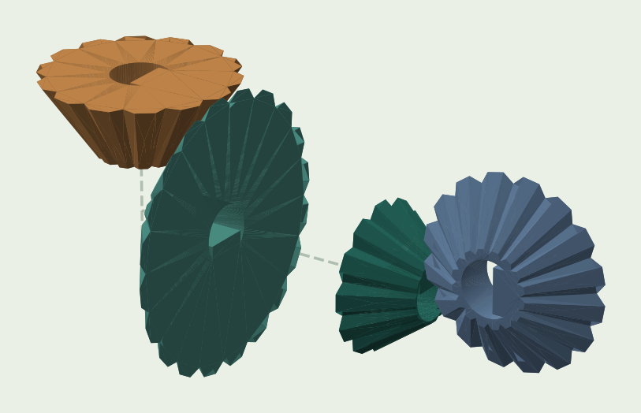
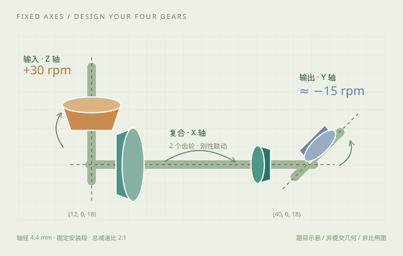

输出轴转速
目标约 −15 rpm来自正式仿真的汇总转速，不是时间序列。Luna 未进入仿真，缺测不填成 0。
Agent 从空白程序设计四个锥齿轮，在固定的三根正交轴上，把 +30 rpm 输入变成约 −15 rpm 输出。安装轴段、轴径与执行限制已公开，最终交付仍要接受原版 Blender 接触仿真。


轴系位置与安装轴段示意。虚线为固定轴；四个齿轮由 Agent 自主设计。
输入轴 1 个、复合轴 2 个、输出轴 1 个。复合轴上的两个独立实体在运动仿真中刚性联动。
两个直角级都要形成有效接触；较大的一级与较小的二级共同完成减速和反向。初始状态不允许实体穿插。
三轴直径均为 4.4 mm。孔径、有效轴段、包络、分轴规则与 Python 执行白名单在首轮题面中公开。
| 安装轴 | 轴线 | 有效轴段 | 齿轮数量 |
|---|---|---|---|
| 输入 · Z | (x,y) = (12,0) | z ∈ [20,30] | 1 |
| 复合 · X | (y,z) = (0,18) | x ∈ [14,42] | 2 |
| 输出 · Y | (x,z) = (40,18) | y ∈ [2,6] | 1 |
总包络 x ∈ [4,48]，y ∈ [−11,11]，z ∈ [7,29] mm。输入轴的安装段可延伸到包络外，齿轮必须在包络内。
初始穿插门槛 原评分器对选中的齿轮做 CAD 布尔相交检查，任意一对相交体积 > 10−4 mm³ 即阻断运动仿真。
公开三轴有效安装段、4.4 mm 轴径、按全局包围盒最短方向推断齿轮轴向的规则，以及轴段重叠和径向分位阈值。所有模型还能调用只读的公开静态检查工具。
final.py 必须自包含，留下顶层 part。允许导入 build123d、math、numpy；内置函数白名单和 reversed 等不可用名称均明确列出。额外本地文件不进入正式执行环境。
DPSK 与参考解使用验收 STL。Luna 按参数重建；Sol 按冻结程序的多边形曲面重建，并可切换存在缺失的正式验收网格。分解查看只改变显示位置，不代表安装状态或真实运动。
展开后载入冻结源程序。
| 检查内容 | GPT-6 Luna | GPT-6.1 Sol | DPSK Flash 1017 |
|---|
来自正式仿真的汇总转速，不是时间序列。Luna 未进入仿真，缺测不填成 0。
正确四齿轮结构、无额外游离实体时，功能分 = 0.25 × engaged + 0.25 × (1 − stop_fraction) + 0.50 × speed_score × direction_score。
其 engaged 与 speed_score 均为 0，输出约 −1.78 rpm。这个分数不能解释成“传动完成了 24.83%”；Sol 的中间轴有转动、输出轴静止，但正式验收网格缺少复合轴小齿轮，不能据此把失败完全归因于模型设计。
以下 MP4 来自原评分器的正式验收工件，不是网页合成动画。Luna 未进入仿真，没有录像。
公开安装与执行约束后，三模型都能构建有效实体并正确分轴；Sol 与 DPSK 进入了真正的运动仿真。Luna 的几何穿插和 DPSK 的传动未达标均有直接记录。Sol 另有交付与仿真网格不一致，需先核清这一环节，再判断其设计表现。
Luna 和 Sol 主动提前结束，DPSK 用满 36 次回复。每模型只有一条正式轨迹，不能把这次结果当作用尽所有预算后的能力上限，或据此建立稳定排名。
本轮同时增加题面信息和静态检查反馈，成绩变化不能单独归因于某一个参数。接触仿真中的失败也不足以单独证明齿形、间隙或相位中的哪一项是唯一根因。
通过 Python 编写实体几何；最终验收重新执行冻结的 final.py，构建 BREP 并检查相交。
原评分器执行刚体接触仿真。Sol 与 DPSK 还在开发中自行编写并运行了 Blender 测试。
每模型独立禁网工作区，8 CPU / 12 GiB。设计环境无参考解、正式评分源码或 API 凭据。
终端编写 CAD，自选几何检查、图片和仿真。
检查构建、实体、分轴和穿插，不返回正式分数。
最多 3 次正式快照；不挑历史最佳，不由主机修复。
只转交 final.py；几何门槛通过后才进入动力学。
各上限同时生效；静态检查和内部建模调试不按“3 次快照”计数。单命令上限 180 秒，reasoning 参数为 medium。GPT 两模型各遇到一次网关并发中断，均从原请求恢复，累计额度保留，仅排除进程停止后等待恢复的间隔。
这些是模型开发中的原样图像，可能对应中间版本；不替代最终冻结几何或正式验收结果。
来源：CAD-bench 的 compound_right_angle_gearbox_reverse，固定提交 f1084c3d345f859ba48a4bd9d5c95bccca7dcb46。本轮是公开安装／执行契约的 SimulationLE 改编，保留原传动目标、原评分器和软件镜像。
论文历史实验使用 STEP 交付；当前公开 Harbor 任务使用 final.py。本页不声称完整复刻论文历史 Agent 协议。仓库遵循其 原始许可证。
旧轮没有公开完整轴段与执行白名单，三模型都未进入正式动力学。本轮新增公开契约和静态检查工具；旧轮记录完整保留，未覆盖。本页主结果采用公开约束后的复测。
功能分没有官方二值通过线。封装后的 reward = 0.05 × build_success + 0.95 × overall_score；本页主要展示 overall_score，避免把构建基础分与传动表现混淆。
Blender 接触结果不等同于真实强度、效率、寿命或制造认证。页面几何渲染是静态查看，不是正式运动录像。